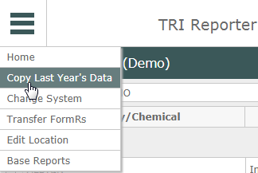
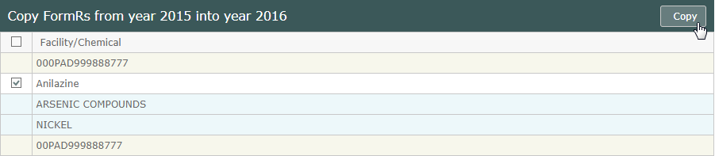
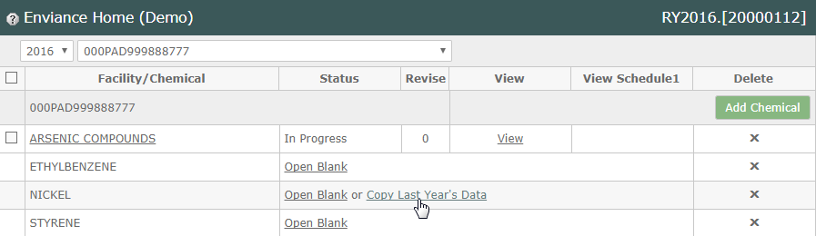

To get started with this year's TRI reporting, you can copy last year's FormRs for your reportable chemicals. After copying the FormRs, you can start with a blank form or copy the data from last year for each reportable chemical and edit it as necessary. You can also add any new chemicals you may need to report on (see Managing Chemical FormRs).
To copy FormRs from last year:
Select Copy Last Year's Data from the menu button (top left).

The facilities in the system are displayed, with the FormRs for each facility listed below it.
Facilities are shown with a light tan background. Chemical FormRs available for transfer are white with a checkbox. Those already transferred are light blue.
Check the boxes for the forms you want to copy.
Select the checkbox box at the top of the column to select all available FormRs. If no checkbox is displayed for a chemical, the FormR cannot be copied (either because it has not been submitted, or has already been copied).
The FormRs for the previous year must be validated and submitted in order to be copied.

Click the Copy button (top right) to copy the selected FormRs.
After the Form Rs have been copied to this year, you can choose whether to open a new blank FormR to enter data, or to copy last year's data for each chemical into the FormR. If you copy the data, you can then open the form and edit it as needed.

To return to the Home page, select Home from the main menu button (top left).